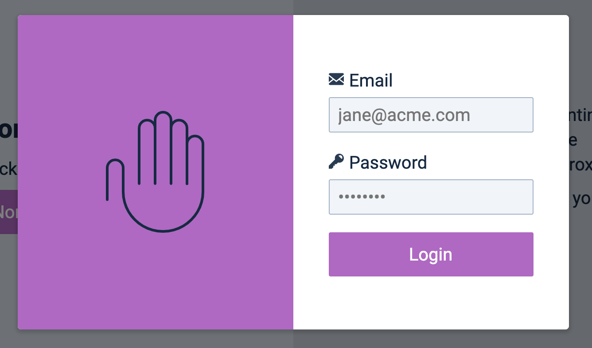

To open the modal, we need to add is-open to the modal’s overlay. We can find the overlay from the modal element. (The overlay is the modal’s parent element).
We need to create an openModal function inside modal.js. There are several ways to create this function:
Creating it outside Modal
Creating it inside Modal
Creating it as a method
There are pros and cons to each approach.
If we create openModal outside Modal, the code will look something like this:
export default function Modal (settings) {
// ...
}
function openModal () {
// ...
}
The downside to this approach is you cannot take advantage of the lexical scope. You have to pass in variables from Modal into openModal.
Example:
export default function Modal (settings) {
// ...
openModal(overlay)
}
function openModal (overlay) {
overlay.classList.add('is-open')
}
If we declare openModal in Modal, we don’t have to pass in any variables. We can rely on the lexical scope.
export default function Modal (settings) {
// ...
function openModal () {
overlay.classList.add('is-open')
}
// Opening the modal
openModal()
}
Although this works, I find it messy to have lots of functions scattered inside another function. I find it easier to read the code when all my functions are placed together in an object, which brings us to the third way: Creating openModal as a method.
When I do this, I don’t have to write the function as openModal anymore. It’s obvious that I’m opening the modal when I write modal.open. So I can rename openModal to open.
export default function Modal (settings) {
// ...
const modal = {
open () {
overlay.classList.add('is-open')
}
}
// Opening the modal
modal.open()
}
For this to work, I need to rename the modal variable passed via the settings. I like to add Element as a suffix so I know I’m dealing with an element.
We’re done with the setup now. And we can focus on the mechanics of opening the modal.
Opening the Modal
We need to open the modal when a user clicks on the button. This means we need an event listener. We can place this event listener inside Modal to make things simple.
The modal should appear when you click the button.

Waving the hand
We called a wave function inside openModal previously. This wave function makes the hand wave.
// Previous version of openModal
const openModal = _ => {
wave()
// ...
}
When we build libraries, we need to be careful about what we put into the library. In this case, it doesn’t make sense to write wave inside modal.js because most modals don’t have a waving hand animation.
We can provide a callback for users to inject wave into the Modal library. Since the wave animation runs after the modal opens, we call this callback afterOpen.
We’ll get an error if the user doesn’t pass in an afterOpen setting. There are two ways to handle this:
Check with a condition
Use a fallback function
Option 1 (Check with a condition) looks like this:
export default function Modal (settings) {
// Declare variables
const modal = {
open () {
overlayElement.classList.add('is-open')
if (settings.afterOpen) {
settings.afterOpen()
}
}
}
// Add event listeners
}
Option 2 is neater. We can provide an empty function as the fallback to run.
It’s often easier to do this with a default settings object. When we create the component, we need to overwrite this default setting object with the options the user passed in.
// Default settings object
const defaults = {
buttonElement: '',
modalElement: '',
afterOpen () {} // Empty function used as a fallback
}
export default function Modal (settings) {
// Overwrite default settings with user settings
settings = Object.assign({}, defaults, settings)
// ...
}
We can now write afterOpen without checking for conditions.
Since we converted into ES6 modules, we can include GSAP directly inside main.js. There’s no need to use an extra script tag. This makes it clear what libraries we included in our projects.
Since we don’t know what users will put into their modals, we cannot ensure the first element is always input. We need to check for other keyboard focusable elements as well.
The easiest way is to use a function I explained in this article.
const trapFocus = event => {
const focusables = modal.querySelectorAll('input, button')
const firstFocusable = focusables[0]
const lastFocusable = focusables[focusables.length - 1]
// Directs to first focusable
if (document.activeElement === lastFocusable && event.key === 'Tab' && !event.shiftKey) {
event.preventDefault()
firstFocusable.focus()
}
// Directs to last focusable
if (document.activeElement === firstFocusable && event.key === 'Tab' && event.shiftKey) {
event.preventDefault()
lastFocusable.focus()
}
}
We know we check for all possible keyboard focusable elements, not just buttons and input fields. So we need to use getKeyboardFocusableElements in trapFocus.
This time, we’re going to pass the modal into getKeyboardFocusableElements because we want to include the close button (which is contentElement's sibling).